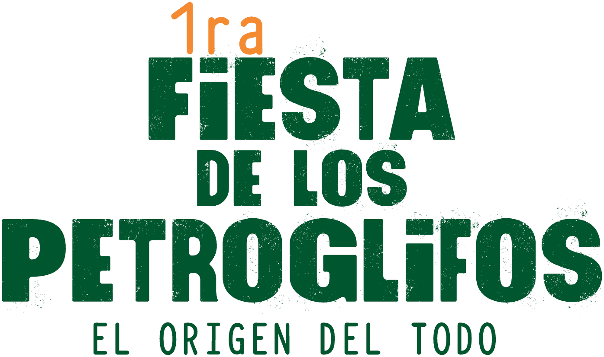
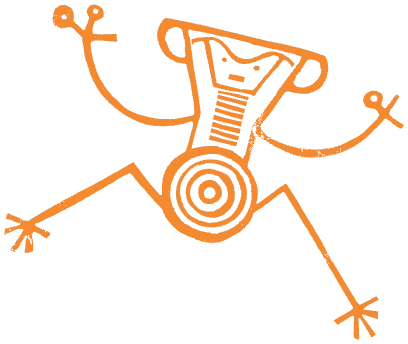
de nov 2026
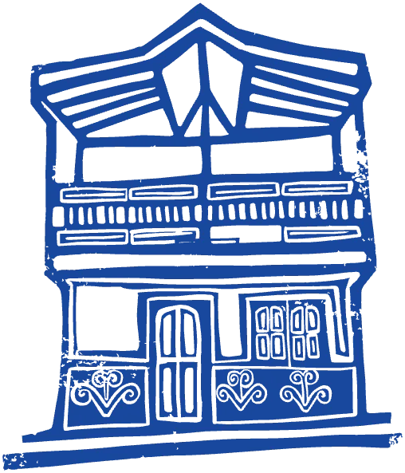
Támesis,
Antioquia
Ciencia – Saberes ancestrales – Recorridos
¡Aprende sobre el complejo de rocas con la mayor concentración de petroglifos de Colombia!
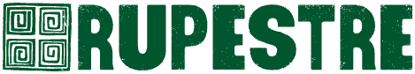
Támesis, Antioquia
programación
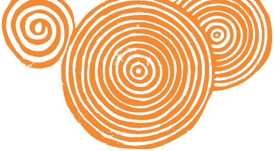
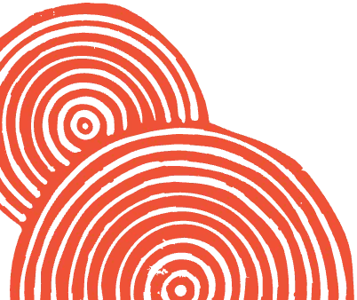
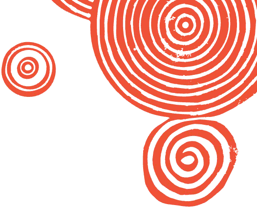
Caminar entre rocas sagradas
recorridos
Salidas guiadas a los sitios con petroglifos. Los cupos son limitados y requieren inscripción previa. El punto de encuentro se comunicará cuando se confirme la inscripción.
Evento central
santuario rupestre del cartama
¿Por qué los petroglifos de Támesis deberían ser Patrimonio Cultural de la Nación?
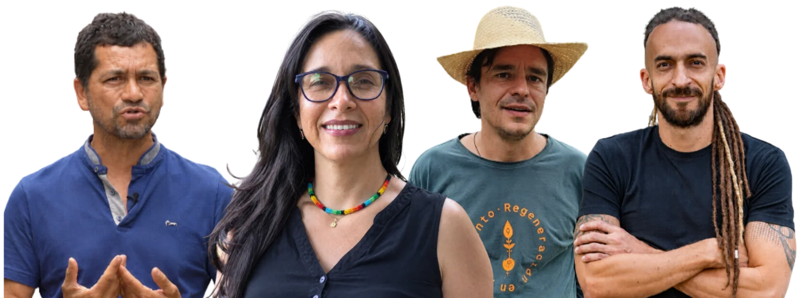
– Casa Nido
Conversan Alba Nelly Gómez (decana de la Facultad de Ciencias Sociales y Humanas de la UdeA), Daniel Carvalho (excongresista) y Rodrigo Echeverri (Ecocartama). Modera Sebastián Restrepo (Visión Suroeste).
Lugar: Casa Cultural El Nido · Cl. 11 #11-16, Támesis.
Voces del encuentro
invitados
Toca cada perfil para conocer su trayectoria.
Del 13 al 15 de noviembre · Támesis, Antioquia
el origen
del todo
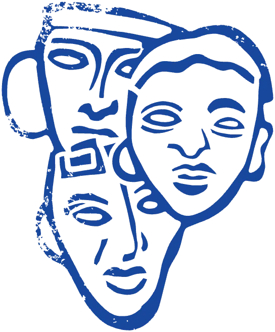
La Fiesta de los Petroglifos es un encuentro que busca visibilizar y celebrar uno de los patrimonios más valiosos de Colombia: el complejo arqueológico de Támesis, en el Suroeste antioqueño, un santuario de rocas que alberga la mayor concentración de petroglifos del país.
El origen del todo es la temática de esta primera edición. Así como los petroglifos son señales de los primeros pobladores de este territorio, esta Fiesta marca también un comienzo: una invitación a reflexionar sobre los orígenes de las rocas y de quienes las grabaron, los mitos y leyendas que las comunidades han tejido a su alrededor, y la relación que hoy tenemos con ellas.
¿Qué vamos a vivir?
Recorridos guiados por los sitios con petroglifos, talleres para niños, jóvenes y adultos, conversatorios entre sabedores, investigadores e instituciones, y lanzamientos de libros y juegos pedagógicos que buscan promover y divulgar este tesoro del país.
¿Para quién?
Para la comunidad de Támesis y el Suroeste, guardianes y vecinos de las rocas; para investigadores, gestores culturales, docentes y estudiantes; y para visitantes curiosos.
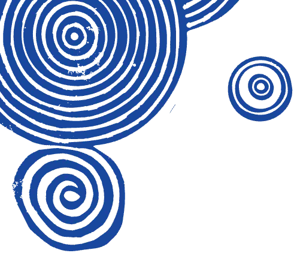
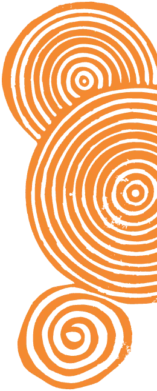
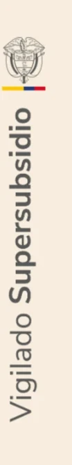
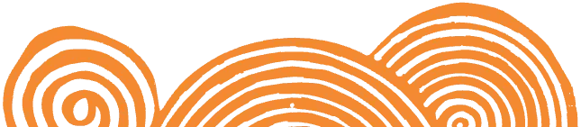